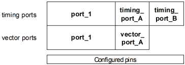
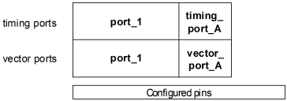
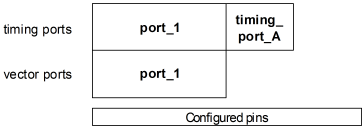
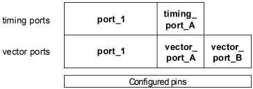

Incomplete multi-port setups
Usually, both the timing and the vector ports of a multi-port setup will include all configured pins. But it is also possible to work with incomplete setups, where either the timing ports or the vector ports or both do not cover all pins. Note, however, that some combinations must be used with care.
The most common case is that the timing ports include all pins, but that the vector ports are incomplete, for example:

In such a case, break vectors (as defined in the specified timing) will be executed for the pins that are not included in any vector port (in the example, the pins of timing_port_B). This is convenient when you want to keep a PLL alive across several test suites (see Continuous Clock Setup).
A second option is to let timing and vector ports cover the same proper subset of the configured pins, for example:

In this case the primary timing for the pins not included in the setup (which must be present to prevent a possible sequencer timeout) will be based on the default timing specified in waveform set 1. In particular, the period for these pins will be based on the period of waveform set 1, but it may be slightly greater or smaller. In this case, too, break vectors (but now as defined in waveform set 1) will be executed for pins not included in the setup.
Since the default period of waveform set 1 is 1000 ns, this behavior may prolong the activation of the primary sets. If you want to avoid this, define a smaller period for waveform set 1.
SmarTest will issue a warning if the timing setup contains a multi-port timing specification that does not cover all pins with sequencing capability. This warning will usually read as follows:
WARNING: W280: Some pins are not used in the following multiport timing specifications: <List_of_specifications>
The wording, however, will be different in the following special case: If test points have been enabled by setting the testpoints: entry of the .technology file to a value > 0, all DC Scale pins have sequencing capability, and therefore SmarTest expects that a timing setup is defined for them in a multi-port specification. But if no test points have been actually defined for any DC Scale pin, enabling test points is redundant, and the problem of an incomplete specification can be solved by simply setting testpoints: to 0. Therefore, if all omitted pins with sequencing capability are DC Scale pins, the following message will be issued:
WARNING: W280 Some DC pins are not used in the following multiport timing specifications: <List_of_specifications>
You can also combine the two previous constellations as follows:

Finally, the setup can be incomplete in that not all pins of the vector ports are also included in a timing port, for example:

In this case SmarTest will issue the following warning at runtime:
WARNING: There are pins with vectors running at undefined speed Label: <label> Pins: <pins>
This scenario should be avoided. The primary timing for the excluded pins will again be based on waveform set 1 (see Fixed timing). The period will be close to that of waveform set 1, and the waveform DC/DC power units of the vector setup will be interpreted according to the waveform definitions of waveform set 1. Note that in this case keeping the default period for waveform set 1 (1000 ns) will usually lead to a significant slow down of the test, since the other ports (port_1 and vector_port_A in the example) will most probably have finished their test much earlier than the vector port (vector_port_B in the example) that runs with the period of waveform set 1. But it is the slowest port that determines the overall length of the test.
Functional changes
- Introduced before SmarTest 6.3.2
- SmarTest 6.5.3: Support for incomplete multi-port setups has been extended.